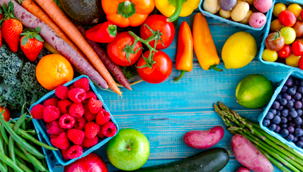

Healthy eating involves constnantly having a diet that is balanced in nutritients, and is a vital factor for survival no matter how old you are. However, unhealthy diet, such as having diet that is too high in saturated fat or added sugars, can lead to diseases such as heart disease and obesity. Unhealthy eating has been a continuing issue in the modern world.

Want to help eliminate this issue? See what opportunities are available for you below!
Here you can find what you can do to promote the elimination of human trafficking in your local area!
A place to meet others with interests in racial equality and chat!
National Institute on Aging. "Healthy Eating." Accessed February 24, 2019. https://www.nia.nih.gov/health/healthy-eating.
Center for Science in the Public Interest. "Why Good Nutrition is Important." Accessed February 24, 2019. https://cspinet.org/eating-healthy/why-good-nutrition-important.